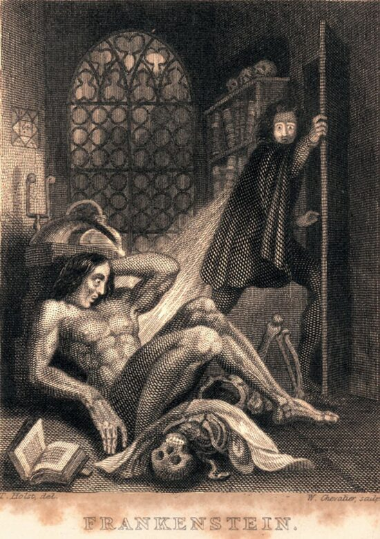

Ficção científica identifica o gênero da ficção especulativa, normalmente lida com conceitos
ficcionais e imaginativos, relacionados ao futuro, ciência e tecnologia. Evita utilizar-se do
sobrenatural, tema mais recorrente na Fantasia, baseando-se em fatos científicos e reais para
compor enredos ficcionais
A ação pode girar em torno de um grande leque de possibilidades como: viagem espacial, viagem
no tempo, viagem mais rápida que a luz, universos paralelos, mudanças climáticas, e/ou vida extraterrestre.
" Fantasia é o impossível tornado provável. Ficção científica é o improvável tornado possível
"
Possui a narrativa de possíveis fatos que poderiam acontecer em outro tempo ou espaço, apresentando
histórias fictícias e fantásticas, porém, apesar de um enredo que é julgado como absurdo,
torna-se convincente por se relacionar com a ciência.
 Frankenstein ou O Prometheus Moderno (1831 - Versão Ilustrada)
O romance que aparece quase sempre entre os marcos iniciais da ficção científica é Frankenstein, de Mary
Shelley (1797-1851), publicado em 1818.
Nessa obra, que se enquadra também no gênero terror, somos apresentados a um cientista que usa seus
conhecimentos para criar um homem a partir de pedaços de pessoas mortas. É claro que o enredo vai além
disso, mas é interessante ver o uso da ciência para promover coisas a princípio inimagináveis.
Viagem ao Centro da Terra (Edição Comentada e Ilustrada - 1831)
Após Shelley, começam a surgir outros nomes da ficção literária, entre eles temos Júlio
Verne (1828-1905), com suas várias obras que exploram a temática do fantástico, a partir do científico, de
uma forma fascinante. Alguns críticos literários o consideram o inventor do gênero ficção científica, de
fato.
Viagem ao Centro da Terra e Vinte Mil Léguas Submarinas nos mostram a capacidade do Verne de escrever sobre
o aparecimento de novos avanços científicos, como os submarinos, as máquinas voadoras e a viagem à Lua,
antes de tudo isso ser real.
Atualmente, temos em massa a construção de enredos fictícios cientificamente no formato longa, que fazem muito
sucesso. O cinema foi inventado em 1895, e até esse momento ainda não existiam filmes com longas metragens,
apenas pequenos vídeos.
Foi então que em 1902 foi oficialmente lançado o primeiro filme, “A Viagem à Lua" baseado em um livro de Julio
Verne chamado “Da Terra a Lua”, e esse se tornou o primeiro filme da história a usar e abusar de efeitos
especiais.
Filme com produção de George Méliès, que além de produzir e atuar como ator principal, também era
quem desenhava os cenários, os figurinos, criava os efeitos especiais e fotografava. O filme era mudo, e apenas
contava com uma trilha sonora, além disso o filme só tinha 14 minutos.
O enredo do filme narra a história de cinco astrônomos que viajam à Lua em uma cápsula lançada por um canhão
gigante. Trata-se de um filme de ficção científica.
Matrix
A franquia de filmes de Keanu Reeves marcou a história, com longas aclamados e um universo que
serviu de influência para diversas produções. Uma das franquias mais aclamadas do gênero ficção científica,
Matrix, já faz grande sucesso nas telas de cinema desde o final dos anos 90.
O filme conta a historia de um jovem programador que é atormentado por estranhos pesadelos nos quais
sempre está conectado por cabos a um imenso sistema de computadores do futuro. Esses pesadelos começam
a levantar dúvidas sobre a realidade. Após encontros misteriosos, o protagonista descobre ser vitima
um sistema inteligente e artificial que manipula a mente das pessoas e cria a ilusão de um mundo real.
Matrix conta com a sequencia de 4 filmes, sendo o mais recente, lançado em 2021.